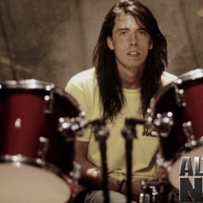
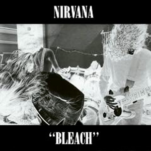

About Nirvana
Nirvana was an American grunge rock band that was formed by singer/guitarist Kurt Cobain and bassist Krist Novoselic in Aberdeen, Washington in 1987. Nirvana went through a succession of drummers, the longest-lasting being Dave Grohl, who joined the band in 1990. Despite releasing only three full-length studio albums in their seven-year career, Nirvana has come to be regarded as one of the most influential and important rock bands of the modern era.
Band Members
Kurt Cobain
Kurt Cobain was born February 20, 1967, in Aberdeen, Washington. In 1987, he started the grunge band Nirvana, which became one of the most successful bands ever. He was a talented yet troubled grunge performer. Kurt Cobain became a rock legend in the 1990s with his band. He committed suicide at his Seattle home in 1994.
Dave Grohl
David Eric "Dave" Grohl is an American rock musician, multi-instrumentalist, singer, songwriter, producer and film director. He is best known as the former drummer of the hugely popular 90s grunge band Nirvana and the vocalist/guitarist for the alternative rock band Foo Fighters. He has sat behind the drums for many bands and artists, most notably: Queens of the Stone Age, Tenacious D, Ghost B.C, Them Crooked Vultures, Tom Petty, Nine Inch Nails, Pearl Jam, David Bowie, Scream, Probot and many, many more
Krist Novoselic
Nirvana's bassist for the entirety of their lifespan before the group was disbanded in 1994. Nowadays, Krist is a humanitarian and a human rights activist.
Musical Style
Cobain described the sound of Nirvana when it first started as "a Gang of Four and Scratch Acid ripoff". When Nirvana recorded Bleach, Cobain felt he had to fit the expectations of the Sub Pop grunge sound to build a fanbase, and hence suppressed his arty and pop songwriting traits while crafting the record in favor of a more rocking sound. Nirvana biographer Michael Azerrad argued, "Ironically, it was the restrictions of the Sub Pop sound helped the band find its musical identity". Azerrad stated that by acknowledging that its members had grown up listening to Black Sabbath and Aerosmith, the band was able to move on from its derivative early sound.Cobain sought to mix heavy and pop musical sounds; he commented, "I wanted to be totally Led Zeppelin in a way and then be totally extreme punk rock and then do real wimpy pop songs". When Cobain heard the Pixies's 1988 album Surfer Rosa after recording Bleach, he felt it had the sound he wanted to achieve but until then was too imitated to try. The Pixies' subsequent popularity encouraged Cobain to follow his instincts as a songwriter.
Discography
Bleach (1989)
Bleach is the debut studio album by the American rock band Nirvana, released on June 15, 1989 by Sub Pop. The main recording sessions took place at Reciprocal Recording in Seattle, Washington between December 1988 and January 1989.

Nevermind (1991)
Nevermind is the second studio album by American rock band Nirvana, released on September 24, 1991 by DGC Records. Produced by Butch Vig, it was the band's first release on the label, as well as the first to feature drummer Dave Grohl.

In Utero (1993)
In Utero is the third and final studio album by American rock band Nirvana, released on September 21, 1993, by DGC Records. Nirvana intended for the record to diverge significantly from the polished, refined production of its previous album, Nevermind (1991).